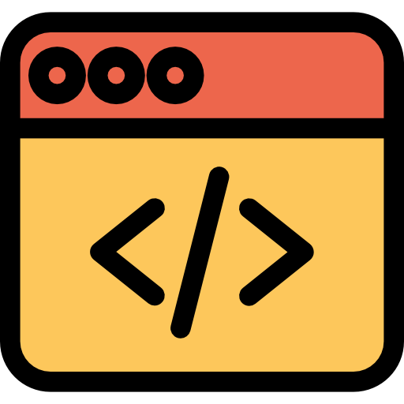

Python

CSS

JavaScript

C#

GitHub
POO
Meu nome é Guilherme, tenho 18 anos e sou atual universitário da UNICID na área de Ciência da Computação, estou em busca do meu primeiro emprego como estagiário/junior em programação, tenho o objetivo de me especializar em back-end e de crescer junto com a empresa, ser um impacto positivo para a prosperidade da mesma. Gosto muito de aprender coisas novas e melhorar mais as minhas habilidades, para sempre ter um desempenho melhor do que o da última vez.
|
Python |
|
CSS |
|
JavaScript |
|---|---|---|---|---|---|
|
C# |
|
GitHub |
 | POO |
Nos primeiros semestres do Senai desenvolvimento de sistemas, fizemos um site chamado de EventHub. Esse site continha telas de cadastro e login funcionais atrelados ao SQL por meio de uma chave do banco de dados, onde em sua interface, era possível ver os eventos de uma empresa, quando eles ocorriam e se o usuário estava cadastrado nos eventos ou não, utilizamos muito o swagger para construir os métodos do site.
Competências utilizadas:
-JavaScript, HTML, SQL, C# e CSS
Neste período fomos introduzidos ao React e React-Native, criamos uma aplicação denominada “Vitalhub” que consistia em um aplicativo para uma clínica médica imaginária onde todos os atendimentos seriam controlados por ele, incluindo: horário da consulta, local da consulta e como chegar, sistema de cadastro com foto e usuário único, prontuário, descrição médica, ficha médica, calendário e etc.
Competências utilizadas:
-React-Native, React, CSS, JavaScript, C#, POO, ASP.NET, .NET FRAMEWORK , Visual Studio IDE e Apis externas
Projetos de Ciência da Computação envolvendo: Aplicações Para a Internet, Programação de Computadores, Organização e Arquitetura de Computadores e Pensamento Computacional.
Competências utilizadas:
-Python, HTML, CSS, JavaScript...